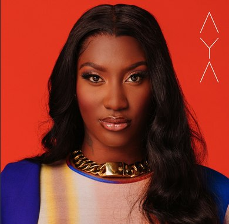

Une chanson, une artiste, un débat sur la langue et l'identité.
Qui est Aya Nakamura ?

Aya Nakamura · pochette de l'album AYA (2020)
Aya Coco Danioko est née le 10 mai 1995 à Bamako, au Mali, dans une famille de griots : des conteurs et musiciens qui transmettent l'histoire et les traditions par la parole et le chant. Elle est l'aînée de cinq enfants.
Elle arrive en France quand elle est petite. Elle passe par Montreuil, puis grandit à Aulnay-sous-Bois, en Seine-Saint-Denis (le « 93 »), au nord-est de Paris. Elle devient française en 2021.
Son nom de scène vient de Hiro Nakamura, un personnage de la série américaine Heroes qui peut voyager dans le temps.
Elle écrit ses textes elle-même. Elle mélange le français, l'argot, des mots d'Afrique de l'Ouest, l'anglais et l'espagnol. Sa musique mêle la pop, le R&B, le zouk et les rythmes afro.
5albums, de 2017 à 2025
1 milliardde vues pour le clip de « Djadja » (2025)
n° 1en France et aux Pays-Bas avec « Djadja »
31,4 millionsde téléspectateurs pour les JO 2024
Les grandes étapes
2017Premier album, Journal intime.
2018Album Nakamura et le tube « Djadja ». Elle est la première chanteuse française numéro 1 aux Pays-Bas depuis Édith Piaf (1961).
2020Album AYA. Elle devient la chanteuse francophone la plus écoutée au monde sur Spotify.
2023Album DNK.
2024Elle chante à la cérémonie d'ouverture des Jeux olympiques de Paris, avec la Garde républicaine, en mélangeant ses chansons et Charles Aznavour. Avant la cérémonie, elle a été la cible d'attaques racistes de l'extrême droite. C'est le moment le plus regardé de l'histoire de la télévision française.
2025Album Destinée. Le clip de « Djadja » dépasse le milliard de vues sur YouTube.
2026Trois concerts complets au Stade de France.
Pourquoi Aya divise ?
À l'étranger, elle est un symbole de la France d'aujourd'hui. En France, certains l'accusent de « mal parler » français ou d'être « vulgaire ». D'autres répondent que ces critiques cachent du racisme et du sexisme. C'est le sujet de l'article de Libération (onglets 5 et 6).
« Djadja » (2018)
La vidéo ne s'affiche pas ? Ouvrir sur YouTube. Les paroles sont distribuées en classe.
L'histoire
Un homme raconte partout qu'il a couché avec Aya. C'est faux. Elle lui répond directement : elle a entendu les rumeurs, elle les dément et elle le ridiculise. Lui pense à elle ; elle, elle pense à son travail et à gagner de l'argent.
« Djadja » n'est pas un vrai prénom. C'est un surnom inventé et péjoratif pour un menteur, un homme qui raconte des histoires sur les filles. Selon Aya, ça peut être « un mec lambda » : un ami, un frère… La chanson s'inspire d'une histoire vraie.
Une chanson féministe ?
Beaucoup y voient un hymne à l'empowerment des jeunes femmes. Une femme refuse qu'un homme salisse sa réputation, elle reprend le pouvoir par la parole et refuse d'être un objet. Le thème touche aussi au slut-shaming : on juge une femme sur sa vie sexuelle, réelle ou inventée.
Comment c'est construit ?
Une adresse directe : Aya parle à Djadja à la 2ᵉ personne (« tu »), comme dans une dispute.
Un refrain très répétitif : « Oh, Djadja » et le refus (« y a pas moyen »), faciles à chanter en chœur.
Des oppositions : lui contre elle, la rumeur contre la vérité, le sexe contre l'argent et le travail.
Le discours rapporté : elle cite ce que Djadja dit sur elle, puis le contredit.
Le lexique de la chanson
On y retrouve les procédés du langage des jeunes vus en classe : le verlan, la troncation et les emprunts.
vulgaire = à comprendre, pas à réutiliser. à discuter = le sens n'est pas sûr.
Les traits de l'oral
Élisions : j'suis, j'te, c'qu'il, t'façon (= je suis, je te, ce qu'il, de toute façon).
Pas de « ne » dans la négation : j'suis pas, c'est pas, faut pas.
« Y a » au lieu de « il y a ».
Les marqueursgenre et mais en début de phrase, comme dans la vidéo des expressions de jeunes.
Le mélange des langues : hello, baby (anglais) ; papi, qué pasa (espagnol).
« Djadja » en français soutenu
Jonathan Krego est un jeune chanteur belge, ancien candidat de l'émission The Voice en Belgique. Le 22 décembre 2019, il publie sur Twitter sa reprise de « Djadja » en « français soutenu, pour les nuls ». La vidéo fait le buzz.
Son idée : beaucoup de gens ne comprennent pas ce que chante Aya, alors il « traduit » les paroles en français soutenu. Certains internautes y voient une critique de la chanteuse. Il répond qu'il adore la chanson et ses paroles, et qu'Aya est une « super artiste » qui représente des minorités peu visibles dans la musique.
Écoutez les deux versions avec les paroles distribuées en classe. Pour chaque expression d'Aya, notez ce que chante Krego. Puis classez son choix : S (standard), Sout. (soutenu), Lit. (littéraire, ancien) ou ? (le sens a changé).
✎ Recopiez le tableau dans votre cahier
Aya Nakamura (2018)
Krego (2019)
Réécrire à votre tour
Choisissez le refrain ou un couplet de « Djadja » que Krego ne traduit pas, ou traduit autrement que vous. Réécrivez-le d'abord en français standard, puis en français soutenu. Gardez le sens, changez le registre.
✎ Sur votre cahier
Aide : y a pas moyen → il n'en est pas question → il est hors de question que… ; t'es taré → tu es fou → vous avez perdu la raison.
Discussion · L'esprit de la chanson se maintient-il ?
1. Le sens
Krego garde-t-il toutes les informations ? Quels mots d'Aya n'ont pas de vrai équivalent en français soutenu (Djadja, en catchana…) ? Que se perd-il dans la « traduction » ?
2. Le ton
Chez Aya, le ton est assuré, provocateur, un peu en colère. Et chez Krego ? D'où vient l'humour de sa version : des mots, de l'écart entre le registre et la situation, de sa manière de chanter ?
3. Qui parle ?
Dans l'original, une jeune femme noire de banlieue répond à une rumeur sur sa vie sexuelle. Dans la reprise, c'est un jeune homme belge qui chante. Est-ce la même parole ? Le message féministe reste-t-il ?
4. La langue, c'est le message ?
Le langage d'Aya montre d'où elle vient et à qui elle parle. Si on le remplace par du français soutenu, la chanson garde-t-elle son identité ? Rappelez-vous l'article : on reproche à Aya sa « vulgarité ».
5. Hommage ou moquerie ?
Krego dit qu'il « explique » les paroles « pour les nuls » et qu'il adore Aya. Pourtant, « traduire » Aya en « bon » français, est-ce suggérer que son français n'en est pas ? Qu'en pensez-vous ?
Pour conclure
À l'oral, en une minute : « Selon moi, l'esprit de la chanson se maintient / ne se maintient pas, parce que… ». Donnez deux arguments et un exemple précis tiré des deux versions.
Utilisez : d'un côté… de l'autre… · certes…, mais… · alors que… · en revanche… · ce qui disparaît, c'est… · ce qui reste, c'est…
Pistes pour la discussion : ce que fait Krego (à ouvrir après le travail en groupe)
Ce qu'il change dans la langue
Le vouvoiement : Aya tutoie Djadja ; Krego dit « Monsieur » et « vous ». La dispute devient une scène de théâtre classique.
Le passé simple (« vous la vîtes ») : un temps de l'écrit littéraire, presque jamais utilisé à l'oral. L'effet est comique.
Un lexique juridique et soutenu : diffamer, calomnies, deniers (= l'argent), forniquer, nuire, le bon sens.
Des traductions directes : tit-pe → petit ; t'es taré → vous êtes fou ; y a R → je m'en fiche.
Ce qu'il garde : le mot catin, qui est déjà un mot ancien et littéraire. Chez Aya, c'était le mot le plus « soutenu » de la chanson.
Ce qu'il change dans le sens
Djadja devient « Jean Jean » : un prénom français ordinaire remplace le surnom inventé. Le mot de l'argot disparaît.
Il dit ce qu'Aya ne disait pas : Aya refuse de nommer la position sexuelle (« en catchana ») ; Krego la nomme, avec un mot cru. Le soutenu rend la chanson… plus explicite.
La mère : Aya dit qu'elle n'est pas la mère de Djadja et qu'elle ne va pas lui faire la morale. Krego, lui, critique la mère qui l'a mal élevé. Le sens a changé.
« Tu dead ça » : chez Aya, c'est « tu l'as très bien fait » (ironique). Chez Krego, c'est « vous l'avez vu dans vos rêves ». Il réinterprète.
« Tchouffer » : Krego comprend une menace (« je vous écraserai »). C'est une interprétation possible de ce mot difficile, mais pas la seule.
Une phrase bizarre : un vers de Krego n'a pas vraiment de sens grammatical. Pour rimer, il « force » la langue soutenue.
Pour conclure
Le récit reste le même (la rumeur, le refus, le mépris) et la colère aussi. Mais l'humour change de cible : chez Aya, on rit de Djadja ; chez Krego, on rit surtout de l'écart entre le registre et la situation. Et la voix d'une jeune femme de banlieue qui se défend avec ses propres mots disparaît. L'esprit de la chanson se maintient-il ? La réponse dépend de ce qu'on considère comme l'« esprit » : l'histoire, ou la manière de la dire.
Activités sur la chanson
Avant d'écouter
À deux, répondez à l'oral :
Regardez le début du clip sans le son. Où sommes-nous ? Quelle est l'ambiance ?
« Djadja » : à votre avis, c'est un prénom, un mot inventé, un mot étranger ?
Avez-vous déjà été victime d'une rumeur ? Comment avez-vous réagi ?
Activité 1 · Compréhension globale
Écoutez la chanson avec les paroles. Choisissez vos réponses, puis appuyez sur Vérifier.
Activité 2 · D'où vient ce mot ?
Pour chaque mot, choisissez le procédé, puis appuyez sur Vérifier. Vous avez vu ces procédés avec la vidéo des expressions de jeunes.
Activité 3 · Du familier au standard
Ces phrases utilisent des mots de la chanson. Choisissez l'équivalent en français standard, puis appuyez sur Vérifier.
Activité 4 · Débat
En petits groupes, choisissez une question. Préparez trois arguments et un exemple.
a) « Aya Nakamura parle mal français. » Êtes-vous d'accord ? Qu'est-ce que « bien parler » une langue ?
b) « Djadja » est-elle une chanson féministe ?
c) Peut-on apprendre le français avec des chansons comme celle-ci ?
d) Les rumeurs sur les réseaux sociaux : comment se défendre ?
Utilisez : à mon avis… · il me semble que… · d'un côté… de l'autre… · je ne suis pas d'accord avec… · il faut que (+ subjonctif)…
L'article de Libération
« Une femme noire peut-elle incarner la France ? Avec Aya Nakamura, ce n'est plus une question, c'est une réalité »
Un entretien avec Christelle Bakima Poundza : autrice, critique, podcasteuse et réalisatrice. Elle a écrit l'essai Aya pour l'exemple. Portrait d'une France aux rêves illimités (Seuil).
📄 Votre professeur·e vous distribue l'article. Lisez-le une première fois en entier, puis travaillez le lexique et les notes ci-dessous avant de répondre au questionnaire.
Comment le texte est-il construit ?
Un genre : l'entretien. Le titre est une citation de l'autrice, entre guillemets. Un chapeau présente le livre. Ensuite viennent les questions du journaliste (en gras) et les réponses de l'autrice.
Un fil conducteur : le paradoxe. Aya est célébrée à l'étranger mais critiquée en France.
Quatre parties, une par question :
son parcours (Mali, Montreuil, Aulnay) ;
l'histoire coloniale et migratoire ;
la musique comme éducation populaire ;
le concept de « misogynoir ».
Une argumentation appuyée sur des références : une chercheuse (Maboula Soumahoro), une étude (OCDE), un sociologue (Abdelmalek Sayad), une chercheuse américaine (Moya Bailey), des rappeurs (Sniper, 113, Youssoupha) et une anecdote personnelle.
Une voix personnelle : l'autrice dit « je », « pour moi », « notre rêve ». Elle mélange analyse universitaire et témoignage.
Des procédés de style :
une question rhétorique (« Mais pour qui se prend-elle ? ») ;
des citations d'Aya ;
une répétition à la fin (« Elle ne va pas… »), qui insiste sur le refus d'Aya.
Les connecteurs de l'argumentation
Opposition
pourtant, et pourtant, à l'inverse, malgré
Ces connecteurs montrent le paradoxe : origine modeste et pourtant réussite.
Cause et précision
compte tenu de, notamment, ainsi
« Compte tenu de » = si l'on considère, en raison de.
Lexique de l'article
Notes culturelles
Deux registres, une même artiste
Comparez la langue de « Djadja » (y a R, t'es taré, tit-pe) et celle de l'article (incarner, faire allégeance, subversif). Le français familier des jeunes et le français soutenu de l'université parlent de la même personne. Selon vous, est-ce que l'un vaut plus que l'autre ?
Questionnaire de compréhension écrite
Relisez l'article. Choisissez une réponse : vous voyez tout de suite si elle est juste, avec une explication.